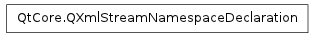

QXmlStreamNamespaceDeclaration ¶

Detailed Description ¶
The PySide.QtCore.QXmlStreamNamespaceDeclaration class represents a namespace declaration.
An namespace declaration consists of a PySide.QtCore.QXmlStreamNamespaceDeclaration.prefix() and a PySide.QtCore.QXmlStreamNamespaceDeclaration.namespaceUri() .
- class PySide.QtCore. QXmlStreamNamespaceDeclaration ¶
- class PySide.QtCore. QXmlStreamNamespaceDeclaration ( prefix , namespaceUri )
- class PySide.QtCore. QXmlStreamNamespaceDeclaration ( arg__1 )
-
Parameters: - prefix – unicode
- namespaceUri – unicode
- arg__1 – PySide.QtCore.QXmlStreamNamespaceDeclaration
Creates an empty namespace declaration.
Creates a namespace declaration with prefix and namespaceUri .
Creates a copy of other .
- PySide.QtCore.QXmlStreamNamespaceDeclaration. namespaceUri ( ) ¶
-
Return type: PySide.QtCore.QStringRef Returns the namespaceUri.
- PySide.QtCore.QXmlStreamNamespaceDeclaration. __ne__ ( other ) ¶
-
Parameters: other – PySide.QtCore.QXmlStreamNamespaceDeclaration Return type: PySide.QtCore.bool Compares this namespace declaration with other and returns true if they are not equal; otherwise returns false.
- PySide.QtCore.QXmlStreamNamespaceDeclaration. __eq__ ( other ) ¶
-
Parameters: other – PySide.QtCore.QXmlStreamNamespaceDeclaration Return type: PySide.QtCore.bool Compares this namespace declaration with other and returns true if they are equal; otherwise returns false.
- PySide.QtCore.QXmlStreamNamespaceDeclaration. prefix ( ) ¶
-
Return type: PySide.QtCore.QStringRef Returns the prefix.